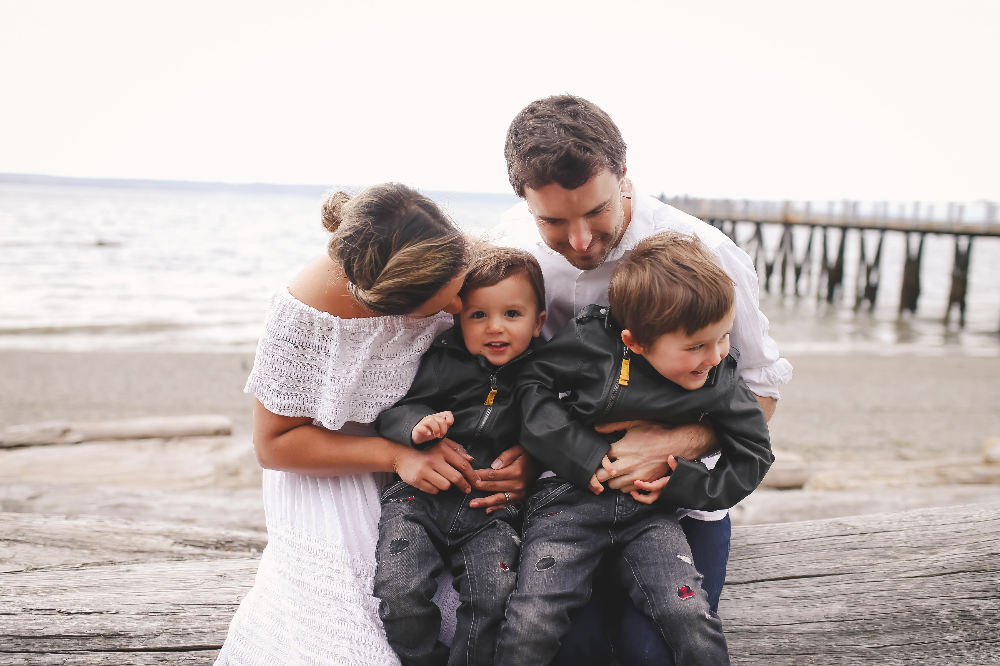

About Me
I am a full-stack web developer with a love for design.

My current focus is now on more frontend development using HTML, CSS, JavaScript, and React for building user interfaces. I also have experience building with Node.js, TDD Testing, Wordpress, PostgreSQL, and other fun, collaborating tools. Even with all of these nifty things in my tool belt, I am always open to learning new technologies and exploring possibilities.
Feel free to check out the fun stuff I've made. You can find me on Github and check me out on LinkedIn here.
When my eyes are not glued to a computer, you’ll find me spending all of my time with my friends and family, gardening, reading, or making some sort of diy project. (Big fan of upcycling and chalk paint!).
